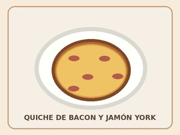

Quiche de bacon y jamón york
Una receta práctica para una reunión especial.

Ingredientes
- Masa para quiche
- Bacon
- Jamón york
- Huevos y queso
Elaboración (Pasos)
- Colocar la masa en el molde.
- Añadir el relleno.
- Hornear hasta que cuaje.
- Dejar reposar antes de servir.
Volver al índice de recetas